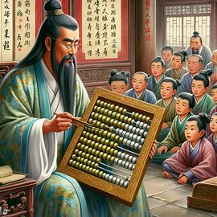

The abacus, an ancient calculating tool, has been used for centuries to perform arithmetic operations. It has played a significant role in the development of mathematics and computing. The abacus consists of a two-dimensional array of slidable beads or similar objects, representing a positional numeral system such as base ten. It has been used in various cultures, including the ancient Near East, Europe, China, and Russia, millennia before the adoption of the Hindu-Arabic numeral system.
Explore the history, functionality, and benefits of this remarkable device as you navigate through our website.
Abacus, calculating device, probably of Babylonian origin, that was long important in commerce. It is the ancestor of the modern calculating machine and computer. The earliest “abacus” likely was a board or slab on which a Babylonian spread sand in order to trace letters for general writing purposes. The word abacus is probably derived, through its Greek form abakos, from a Semitic word such as the Hebrew ibeq (“to wipe the dust”; noun abaq, “dust”). As the abacus came to be used solely for counting and computing, its form was changed and improved. The sand (“dust”) surface is thought to have evolved into the board marked with lines and equipped with counters whose positions indicated numerical values—i.e., ones, tens, hundreds, and so on. In the Roman abacus the board was given grooves to facilitate moving the counters in the proper files. Another form, common today, has the counters strung on wires.Detailed history of the abacus, its origin, and its evolution over time. Learn more
The abacus (pl.: abaci or abacuses), also called a counting frame, is a hand-operated calculating tool of unknown origin used since ancient times in the ancient Near East, Europe, China, and Russia, millennia before the adoption of the Hindu-Arabic numeral system.[1] The abacus consists of a two-dimensional array of slidable beads (or similar objects). In their earliest designs, the beads could be loose on a flat surface or sliding in grooves. Later the beads were made to slide on rods and built into a frame, allowing faster manipulation. Each rod typically represents one digit of a multi-digit number laid out using a positional numeral system such as base ten (though some cultures used different numerical bases). Roman and East Asian abacuses use a system resembling bi-quinary coded decimal, with a top deck (containing one or two beads) representing fives and a bottom deck (containing four or five beads) representing ones. Natural numbers are normally used, but some allow simple fractional components.
step-by-step guide on how to use an abacus.
When young children use abacus, most of them tend to move the beads from both the sides. Therefore, they use both hands, which in result, stimulates brain cells in both sides of the brain. As a result, using abacus enhances cognitive development in children. This is another reason why abacus is also used for various educational programs.
Click here to know more about the amazing benifits of an ABACUS
Click here to buy one of these amazing devices for yourself and for your children
EMAIL: abacus.support45@gmail.com